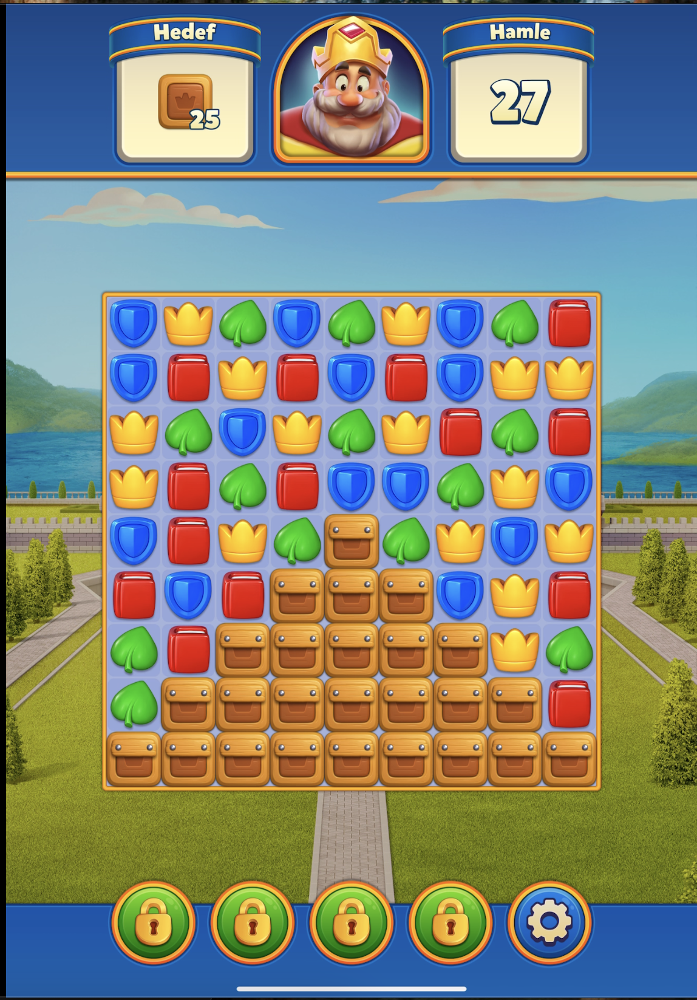
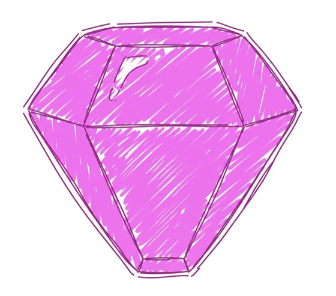
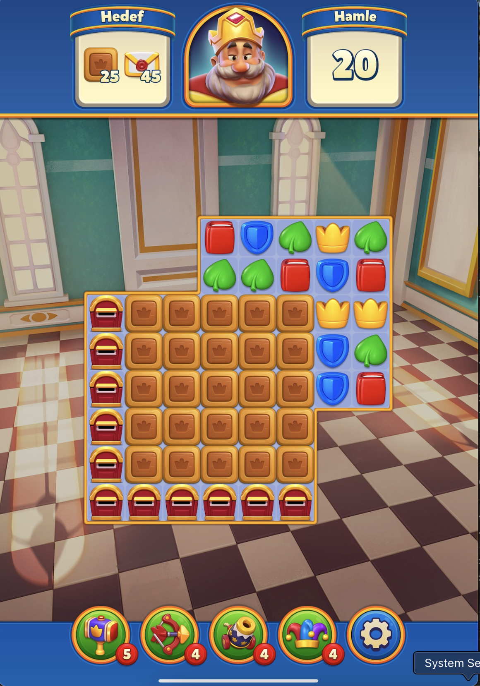
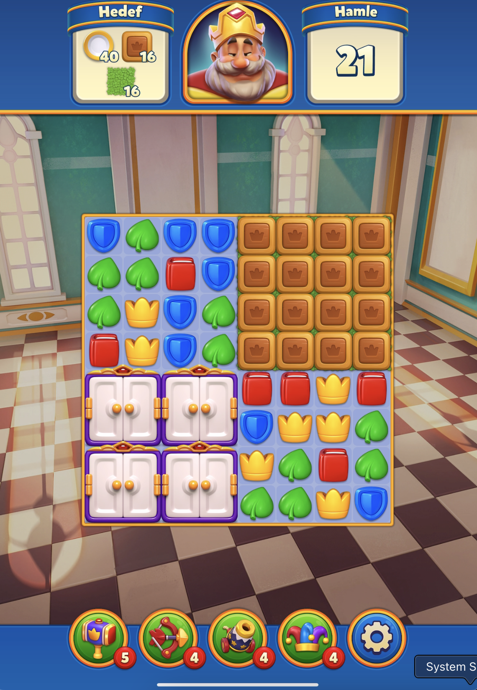
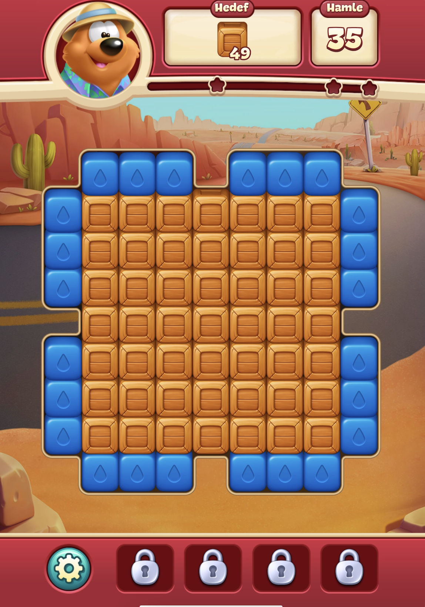
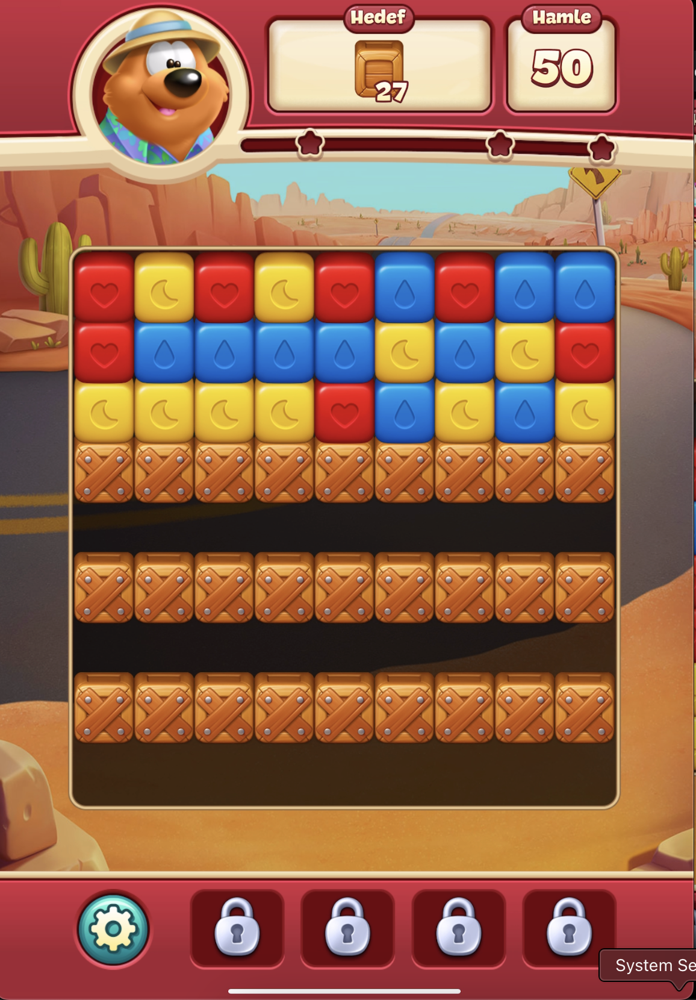
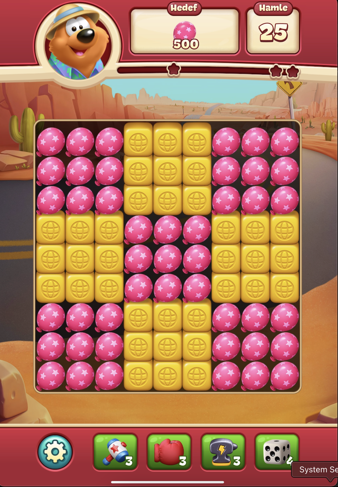
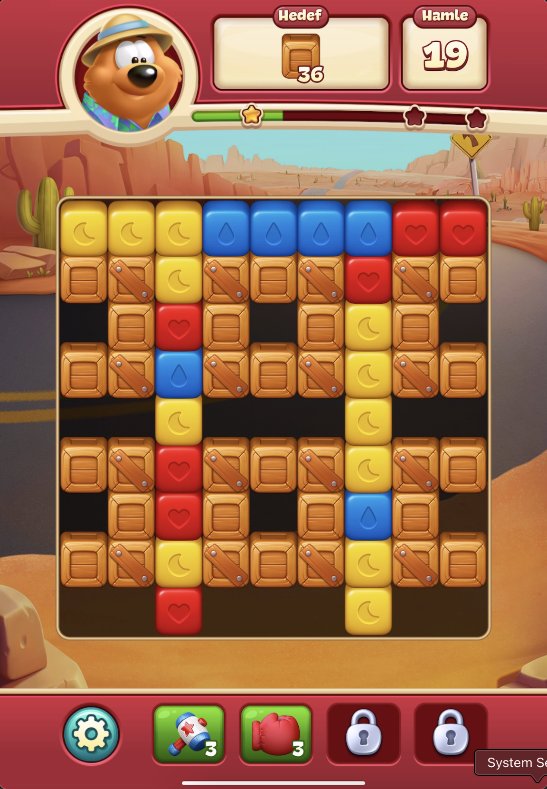
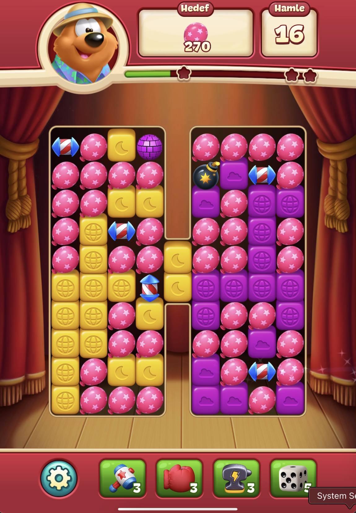
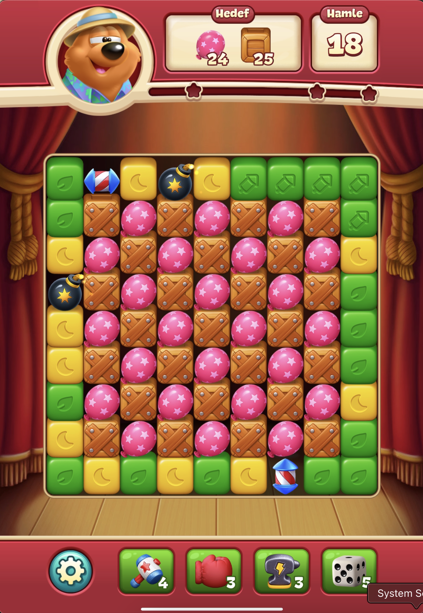

Görünen Zorluk, Gerçek Zorluk
Açılış
L1-L29 aralığındaki her seviye tek tek incelendi: board'un ilk karesi, hedef sayısı, verilen hamle, engel katmanları ve kendi oynayışımdan gelen deneme sayısı ile kalan hamle. Bu veri seti seviye seviye toplanıp bir tabloya işlendi.
Aşağıdaki grafik her seviyenin efektif vuruşunu gösteriyor: engel katmanı × adet toplamından oluşan, tasarımcının o seviyeye gerçekte kurduğu iş yükü. Hedef sayacı bunun çoğu zaman çok daha azını gösteriyor; aradaki fark, ilerleyen bölümlerde tek tek açıklanan zorluk kaldıraçlarından kaynaklanıyor.
Veri tablosunu göster
| Lv | Efektif Vuruş |
|---|---|
| L1 | 36 |
| L2 | 36 |
| L3 | 50 |
| L4 | 49 |
| L5 | 73 |
| L6 | 108 |
| L7 | 98 |
| L8 | 84 |
| L9 | 62 |
| L10 | 108 |
| L11 | 44 |
| L12 | 76 |
| L13 | 97 |
| L14 | 122 |
| L15 | 108 |
| L16 | 114 |
| L17 | 85 |
| L18 | 94 |
| L19 | 128 |
| L20 | Bonus, veri yok |
| L21 | 50 |
| L22 | 60 |
| L23 | 70 |
| L24 | 104 |
| L25 | 99 |
| L26 | 102 |
| L27 | 140 |
| L28 | 120 |
| L29 | 140 |
Metrik Tanımları
Analiz beş metrik üzerine kuruldu:
| Metrik | Formül | Ne ölçüyor |
|---|---|---|
| Efektif vuruş | Σ(engel katmanı × adet) | Hedef sayacının göstermediği gerçek iş yükü. |
| Vuruş / hamle | Efektif vuruş ÷ Verilen hamle | Tasarımcının kurduğu zorluk. |
| Naif hedef / hamle | Toplam hedef ÷ Verilen hamle | Ekran arayüzünün oyuncuya gösterdiği zorluk. |
| Hamle marjı % | Kalan hamle ÷ Verilen hamle | Tek denemede kalan bolluk. |
| Yaşanan zorluk | Deneme sayısı + hamle marjı | Otomatik sınıflama: Deneme≥3 Çok zor, =2 Zor, tek denemede marj≥%25 Kolay, ≥%10 Orta, <%10 Kıl payı. |
Sessiz Zorluk Kaldıraçları
Tasarımcının Verilen hamle'yi sabit veya yumuşak tutup zorluğu başka yollarla ayarladığı, oynanıştan doğrulanmış yedi yöntem. Her biri, "Vuruş / hamle" ile "Naif hedef / hamle" arasındaki farkı büyütüyor.


Taçlı kutudan perçinliye, açık çimenden koyuya geçmek efektif vuruşu ikiye katlıyor, ama hedef sayısında bir değişiklik yaşanmıyor.
L3, L6
Board'daki renk sayısı 4 ile 5 arasında sessizce açılıp kapanıyor, hamle veya hedef sayısına dokunmadan zorluğu değiştiriyor.
L4'te açılıyor, L7'de kapanıyor

Serbest alanın darlığı güçlü power-up'ların (lightball, roket, TNT) üretilmesini engelliyor, oyuncunun araç setini fakirleştiriyor.
L7, L13

Aynı hedef sayısı farklı bir geometriye yerleştirilerek zorluk, hamle sayısına dokunmadan değiştirilebiliyor.
L1 vs L2 (ikisi de 36 kutu hedefli)Aynı boyuttaki iki bölge farklı katman maliyetiyle kurulup board'u eşit olmayan iki kaynak havuzuna bölüyor.
L6

Aynı hücrede iki farklı engel üst üste bulunuyor; hedef sayacı ikisini birden gösteriyor ama görsel bunu her zaman ele vermeyebiliyor.
L10, L15
Statik üretici ailesinde (posta kutusu gibi) aynı hedefe daha az fiziksel segmentle ulaşmak, aynı segmentlere daha sık geri dönmeyi gerektirip zorluğu yükseltiyor.
L21, L30Tasarlanmış vs Yaşanan Ayrışması
Vuruş/hamle bir seviyenin ne kadar zor kurulduğunu ölçüyor. Ama Yaşanan zorluk (kendi oynayışımdan gelen deneme sayısı ve hamle marjı) her zaman aynı sırayla gitmiyor. Aşağıdaki dört seviye, bu iki eksenin ayrıştığı ya da uyuştuğu noktaları gösteriyor.
Yüksek iş yükü, ama hamle bütçesi fazlasıyla tolere ediyor, tek denemede rahat geçiliyor.
Tasarlanmış: 3.92 (yüksek) Yaşanan: Kolay, tek deneme
Orta düzeyde tasarlanmış bir zorluk, oynanışta beklenenden daha dirençli çıktı.
Tasarlanmış: 3.50 (orta) Yaşanan: Zor, 2 deneme
Veri setindeki en ağır tasarım, ama "Çok zor" eşiğine varmadı çünkü hamle bütçesi bir kısmını dengeliyor.
Tasarlanmış: 6.67 (en yüksek) Yaşanan: Zor, 2 deneme
Tasarlanmış ve yaşanan zorluk burada uyumlu: ikisi de veri setinin zirvesinde buluşuyor.
Tasarlanmış: 4.74 (yüksek) Yaşanan: Çok zor, 3 denemeYukarıdaki örnekler tek tek anlatıyor, bu grafik hepsini birden gösteriyor: her nokta bir seviye, X ekseni o seviyenin efektif vuruşu (tasarlanmış iş yükü), Y ekseni kalan hamle marjı (yaşanan bolluk). Kesikli çizgi eğilim doğrusu.
Veri tablosunu göster
| Lv | Efektif Vuruş | Hamle Marjı |
|---|---|---|
| L1 | 36 | %70 |
| L2 | 36 | %67 |
| L3 | 50 | %59 |
| L4 | 49 | %47 |
| L5 | 73 | %67 |
| L6 | 108 | %11 |
| L7 | 98 | %32 |
| L8 | 84 | %37 |
| L9 | 62 | %57 |
| L10 | 108 | %59 |
| L11 | 44 | %44 |
| L12 | 76 | %43 |
| L13 | 97 | %40 |
| L14 | 122 | %22 |
| L15 | 108 | %26 |
| L16 | 114 | %26 |
| L17 | 85 | %17 |
| L18 | 94 | %0 |
| L19 | 128 | %22 |
| L21 | 50 | %50 |
| L22 | 60 | %32 |
| L23 | 70 | %40 |
| L24 | 104 | %42 |
| L25 | 99 | %4 |
| L26 | 102 | %17 |
| L27 | 140 | %10 |
| L28 | 120 | %27 |
| L29 | 140 | %24 |
Yön var: Pearson korelasyonu r ≈ -0.68, yani efektif vuruş arttıkça hamle marjı genel olarak azalıyor, beklenen yönde orta-güçlü bir ilişki. Ama ilişki mükemmel değil (r = -1 olsaydı öyle olurdu): L10 gibi yüksek iş yüküne (108) rağmen geniş marj (%59) bırakılan seviyeler var, L18 gibi orta düzey iş yüküyle (94) marjı sıfıra kadar düşüren seviyeler de. Yani tasarımcı hamle marjını sadece iş yüküne bakarak belirlemiyor, üstüne ayrıca ince ayar yapıyor; bu ince ayarda board yapısı ve renk sayısı gibi başka tasarım değişkenlerinin de payı olabilir.
Genel İstatistik Özeti
L1-L29 aralığının rekorları ve dağılımı.
Rekor L1'den sonra iki kez değişti: önce L15 (4.70), sonra L19 (4.74) zirveye çıktı. L27'nin 6.67'si ikisini de aşıyor.
Bu grafik yeni bir veri değil, yukarıdaki Vuruş/hamle sayılarının art arda kıyaslanmış hali. Her seviye için şu hesap yapıldı: o seviyenin Vuruş/hamle'si, bir önceki seviyenin Vuruş/hamle'sinden çıkarıldı. Sonuç pozitifse (yukarı çıkan altın çubuk) o seviye bir öncekinden daha zor kurulmuş demektir, negatifse (aşağı inen teal çubuk) daha kolay kurulmuş demektir.
Örnek: L26'nın Vuruş/hamle'si 4.43, L27'ninki 6.67. 6.67 - 4.43 = +2.24, yani L27, L26'ya göre belirgin biçimde zorlaşmış. Hemen ardından L28'in Vuruş/hamle'si 4.62'ye düşüyor: 4.62 - 6.67 = -2.05, yani L28, L27'ye göre belirgin biçimde kolaylaşmış. Grafikteki en uzun iki çubuk (en sağdaki altın ve teal çubuklar) tam bu iki geçişi gösteriyor.
Sıfır çizgisi "bir öncekiyle aynı zorlukta" noktası; bir çubuk ne kadar uzunsa, o seviye bir öncekine göre o kadar büyük bir sıçrama yapmış demektir. Düz bir tırmanış yerine böyle inişli çıkışlı bir ritim, oyuncuya art arda zorluk yığmamak için kullanılan bir yöntem.
Veri tablosunu göster
| Geçiş | Değişim |
|---|---|
| L1 → L2 | +0.13 |
| L2 → L3 | +0.52 |
| L3 → L4 | -0.22 |
| L4 → L5 | +0.80 |
| L5 → L6 | +0.66 |
| L6 → L7 | +0.83 |
| L7 → L8 | -0.81 |
| L8 → L9 | -1.04 |
| L9 → L10 | +1.31 |
| L10 → L11 | -1.75 |
| L11 → L12 | +0.90 |
| L12 → L13 | +0.70 |
| L13 → L14 | +1.29 |
| L14 → L15 | +0.18 |
| L15 → L16 | -1.44 |
| L16 → L17 | +0.44 |
| L17 → L18 | +0.22 |
| L18 → L19 | +0.82 |
| L19 → L20 → L21 | L20'de veri yok, kıyas yapılamıyor |
| L21 → L22 | +0.61 |
| L22 → L23 | +1.10 |
| L23 → L24 | +0.50 |
| L24 → L25 | -0.19 |
| L25 → L26 | +0.62 |
| L26 → L27 | +2.24 |
| L27 → L28 | -2.05 |
| L28 → L29 | +0.98 |
En sert tırmanış L26'dan L27'ye (+2.24), en sert rahatlama ise hemen ardından L27'den L28'e (-2.05). Yani veri setindeki en zor seviyenin hemen arkasından, o zamana kadarki en büyük tek seferlik rahatlama geliyor: zirve, bir sonraki seviyede kasten geri çekiliyor.
Kısıt tipi, bir levelin başlangıçtaki serbest alanı ile tüm engeller temizlendiğinde ulaşılan serbest alanı karşılaştırarak hesaplanıyor. İkisi arasında fark yoksa board'un kendisi dar demektir, bu Kalıcı (geometri). Fark varsa engeller kırıldıkça board açılıyor demektir, bu Geçici (engel). İkisi de dolaylı bir zorluk bileşeni: Geçici bir levelde oyuncu ilerledikçe nefes alıyor, Kalıcı bir levelde o darlıkla baştan sona oynuyor.
İki tahta arasındaki boşluk hiçbir zaman kapanmıyor, çünkü orada kırılacak bir engel yok, board bu şekilde oyulmuş. Seviye boyunca aynı dar geometriyle oynanıyor.
Ortadaki 3 sütunluk darlığı sandıklar yaratıyor. Sandıklar kırıldıkça bölge açılıyor, seviyenin sonuna doğru board başlangıçtakinden daha ferah hale geliyor.
L20 (Bonus Bölüm) hedef/hamle yapısı olmadığı için bu dağılıma dahil değil, geri kalan 28 Normal seviye üzerinden hesaplandı.
Board'un kendi şeklinin darlığı ile engellerin yarattığı geçici darlık yaklaşık 40/60 oranında dağılmış: tasarımcı zorluğun bir kısmını sabit geometriyle, çoğunu ise engellerle kuruyor.
Toon Blast, Açılış
Royal Match'te L20 (Bonus Bölüm) hedef/hamle yapısı olmadığı için tamamen dışlanmıştı. Toon Blast'ta L20 gerçek bir hedef/hamle yapısına sahip, ama 500 hedefli tek renkli özel bir tasarım olduğu için efektif vuruşu 500'e fırlıyor, aralığın geri kalanından kopuk bir aykırı değer. Bu yüzden dışlanmadı ama grafikte ayrı bir not olarak işaretlendi.
Veri tablosunu göster
| Lv | Efektif Vuruş |
|---|---|
| L1 | 72 |
| L2 | 72 |
| L3 | 120 |
| L4 | 49 |
| L5 | 54 |
| L6 | 69 |
| L7 | 108 |
| L8 | 72 |
| L9 | 81 |
| L10 | 112 |
| L11 | 25 |
| L12 | 36 |
| L13 | 56 |
| L14 | 54 |
| L15 | 117 |
| L16 | 52 |
| L17 | 92 |
| L18 | 128 |
| L19 | 90 |
| L20 | 500 (aykırı değer) |
| L21 | 85 |
| L22 | 78 |
| L23 | 99 |
| L24 | 150 |
| L25 | 200 |
| L26 | 270 |
| L27 | 99 |
| L28 | 97 |
| L29 | 97 |
Toon Blast, Sessiz Zorluk Kaldıraçları
Aynı kaldıraç mantığı burada da geçerli, ama biri Royal Match'te hiç görülmeyen bir yönde çalışıyor: renk sayısı azaltılarak kullanılıyor.



Kutu ailesi 1, 2 ve 3 katmanlı versiyonlarıyla sırayla tanıtılıyor. Katman arttıkça efektif vuruş büyüyor, hedef sayısında bir değişiklik yaşanmıyor.
Kutu 1 → 2 → 3: L4 → L7 → L9

Royal Match'in tersi bir kullanım: orada renk sayısı arttıkça zorlaşıyordu, burada azaltılarak oyuncuya bir kolaylık payı bırakılıyor. Renk sayısı L1'de 4, L20'de 1'e, L25-29'da 2'ye düşüyor, bu kolaylık başka bir kaldıraçla (Şapka yoğunluğu) fazlasıyla telafi ediliyor.
L1: 4 renk, L20: 1 renk
Tek hedeften çift hedefe, çift hedeften üçlü hedefe geçiş, oyuncunun dikkatini birden fazla engel ailesi arasında bölmeye zorluyor.
İlk çift hedef: L7, ilk üçlü hedef: L14

Royal Match'teki Posta Kutusu ile aynı matematik: Şapka kırılmıyor, yanında eşleşme yapıldıkça üretmeye devam ediyor. Aynı fiziksel segmentlere ne kadar sık geri dönülmesi gerektiği zorluğu belirliyor.
L21, L25
İlk kez ortadan bölünmüş bir harita, geç tanıtılan bir kalıcı-geometri kaldıracı. Board'un ikiye bölünmesi güçlü power-up'ların üretimini kısıtlıyor.
L18

Efektif vuruş yüksek olmasa bile hamle marjını daraltarak "kıl payı" hissi yaratan ayrı bir kaldıraç. Zorluk burada vuruş sayısından değil, tahtanın tasarım şeklinden geliyor.
L16: marj %5.3, L23: marj %0Toon Blast, Tasarlanmış vs Yaşanan Ayrışması
Royal Match'te de görülen ayrışma burada da var, ama Toon Blast'ta bunu açıklayan en büyük tek etken renk sayısı: yüksek tasarlanmış zorluk, düşük renk sayısıyla kolayca sönümlenebiliyor.
500 hedefli, tek renkli özel bir tasarım. Vuruş/hamle 20.0'a fırlıyor ama tek renk sayesinde şaşırtıcı derecede yönetilebilir çıkmış.
Tasarlanmış: 20.0 (aşırı) Yaşanan: Orta, tek deneme
Aykırı değer L20 hariç tutulunca aralığın en yüksek tasarlanmış zorluğu, ama düşük renk sayısı (2) burada da telafi ediyor.
Tasarlanmış: 10.38 (en yüksek) Yaşanan: Orta, tek denemeBurada tasarlanmış ve yaşanan zorluk uyumlu, ikisi de zirvede buluşuyor. Royal Match'in L19'una denk bir örnek.
Tasarlanmış: 7.69 (en yüksek Şapka seviyesi) Yaşanan: Çok zor, 5 deneme
Tasarım bu seviyeyi en zor olarak işaretlemiyor, en yüksek Vuruş/hamle değeri bu değil, ama gerçekte L25 kadar zor çıkmış. Modelin altında kalan bir sürpriz.
Tasarlanmış: 5.50 (orta-yüksek) Yaşanan: Çok zor, 3 denemeRoyal Match'teki aynı soru burada da soruldu. Her nokta bir seviye (L20 hariç, aykırı değer olduğu için), X ekseni efektif vuruş, Y ekseni kalan hamle marjı. Kesikli çizgi eğilim doğrusu.
Veri tablosunu göster
| Lv | Efektif Vuruş | Hamle Marjı |
|---|---|---|
| L1 | 72 | %56 |
| L2 | 72 | %50 |
| L3 | 120 | %42 |
| L4 | 49 | %49 |
| L5 | 54 | %45 |
| L6 | 69 | %31 |
| L7 | 108 | %58 |
| L8 | 72 | %31 |
| L9 | 81 | %38 |
| L10 | 112 | %30 |
| L11 | 25 | %60 |
| L12 | 36 | %71 |
| L13 | 56 | %65 |
| L14 | 54 | %31 |
| L15 | 117 | %38 |
| L16 | 52 | %5 |
| L17 | 92 | %20 |
| L18 | 128 | %21 |
| L19 | 90 | %60 |
| L20 | 500 (aykırı değer) | %12 |
| L21 | 85 | %53 |
| L22 | 78 | %48 |
| L23 | 99 | %0 |
| L24 | 150 | %19 |
| L25 | 200 | %15 |
| L26 | 270 | %15 |
| L27 | 99 | %6 |
| L28 | 97 | %23 |
| L29 | 97 | %17 |
Burada da bir yön var ama Royal Match'ten daha zayıf: Pearson korelasyonu r ≈ -0.47 (Royal Match'te -0.68'di). Yani efektif vuruş arttıkça marj yine genel olarak azalıyor, ama ilişki daha gürültülü. L12 gibi düşük iş yüküne (36) rağmen çok geniş marj (%71) bırakılan seviyeler var, L23 gibi orta iş yüküyle (99) marjı sıfıra indiren seviyeler de. Daha zayıf korelasyon, Toon Blast'ta hamle marjının efektif vuruştan bağımsız başka bir kaldıraçla (renk sayısı) daha güçlü şekilde ayarlandığını düşündürüyor.
Toon Blast, Genel İstatistik Özeti
L1-L29 aralığının rekorları ve dağılımı, L20'nin aykırı değer olduğu unutulmadan.
Aynı hesap: o seviyenin Vuruş/hamle'si, bir önceki seviyenin Vuruş/hamle'sinden çıkarıldı. L19→L20 ve L20→L21 geçişleri bu grafikten çıkarıldı çünkü L20'nin aykırı değeri (+14.00 ve -17.17 gibi) diğer 26 geçişi görünmez kılıyordu; bu iki geçiş kesikli çizgiyle işaretlendi.
En sert tırmanış L14'ten L15'e (+3.94), en sert rahatlama hemen ardından L15'ten L16'ya (-4.58). L26'dan L27'ye de sert bir rahatlama var (-4.88), Royal Match'teki L27→L28 örüntüsüne benziyor: zirveden hemen sonra kasten geri çekilme.
Toon Blast'ta Royal Match'teki gibi hedef/hamle yapısı olmayan bir seviye yok, bu yüzden dağılım 29 seviyenin tamamı üzerinden hesaplandı.
Royal Match'in 28 Normal seviyedeki 11 Kalıcı / 17 Geçici dağılımına (~%39 Kalıcı) şaşırtıcı derecede yakın bir oran (~%38 Kalıcı). Devamı Bölüm 10'da.
Royal Match Karşılaştırması
İki oyunun Vuruş/hamle eğrisi üst üste. Ölçek 0-11 aralığında tutuldu, Toon Blast'ın L20'si (20.0) bu ölçeğe sığmadığı için çizgiden çıkarıldı ve ayrı işaretlendi, aksi halde tek bir seviye grafiğin geri kalanını okunmaz hale getirirdi.
İki eğri de benzer bir bölgede dalgalanıyor, ama Toon Blast genel olarak daha yüksek bir bandda seyrediyor ve L14-L15 ile L23-L26 arasında Royal Match'in hiçbir noktada ulaşmadığı seviyelere çıkıyor. Bu iki farkı renk sayısı kaldıracıyla birlikte okumak gerekiyor: Toon Blast'ın tasarlanmış zorluğu daha yüksek görünse de renk sayısını azaltarak bunu telafi eden bir mekanizması var, Royal Match'te böyle bir denge unsuru yok.
İki farklı stüdyo, birbirinden bağımsız olarak neredeyse aynı kalıcı/geçici kısıt dengesine ulaşmış. Bu, tek bir oyunun tercihi olmaktan çok, tap-to-blast/match-3 türünde işe yarayan bir denge noktası olabilir: board'un yaklaşık üçte biri baştan sona dar kalırken, geri kalanı engellerle geçici olarak daraltılıyor.
Kapanış
İki oyun, iki farklı kaldıraç setiyle aynı sonuca ulaşıyor: hedef sayısı ya da hamle sayısı tek başına okununca zorluk hikayesinin küçük bir parçasını anlatıyor. Royal Match bunu engel katmanlarında ve board şeklinde gizliyor, Toon Blast ise buna ek olarak renk sayısını da bir kaldıraç olarak kullanıyor, üstelik ters yönde.
Bu veri setinden çıkan ilke şu: hamle bütçesi iş yüküyle birlikte ayarlanmalı, tek başına vuruş sayısı yeterli bir zorluk göstergesi değil. Toon Blast bir madde daha ekliyor: eşleşme elemanı (renk) sayısı da hamle ve engel kadar güçlü bir sessiz zorluk kaldıracı olabilir. Bir seviyeyi zorlaştırmak ya da kolaylaştırmak için tek bir kaldıracı çekmek yeterli değil; kaç renk var, kaç hamle var, kaç katmanlı engel var, board ne kadar açık, bunların hepsi aynı anda kararlaştırılan bir bütün.